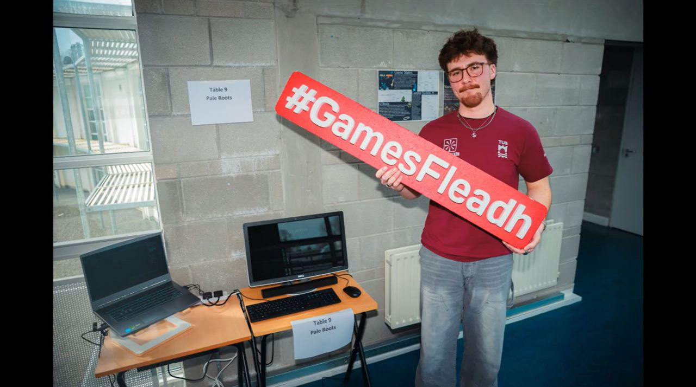
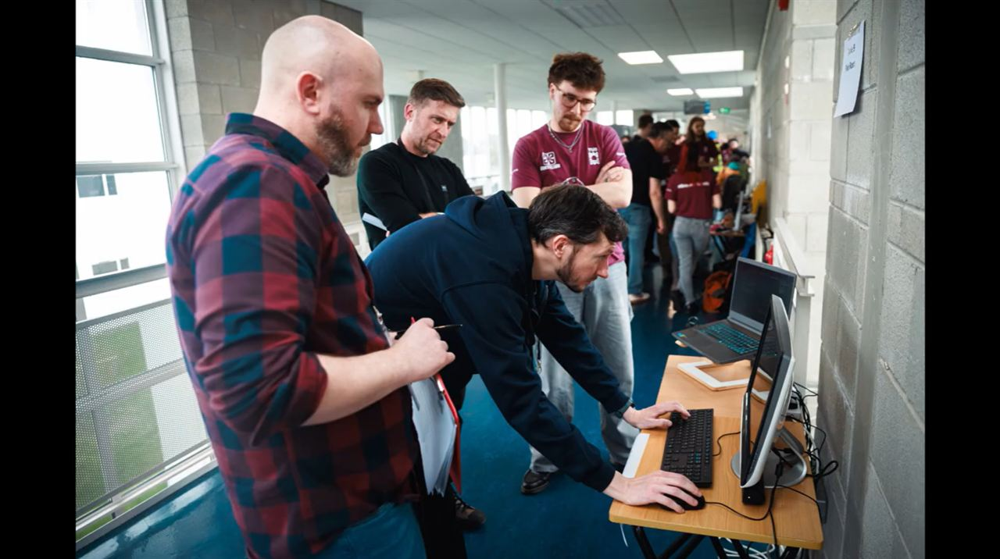
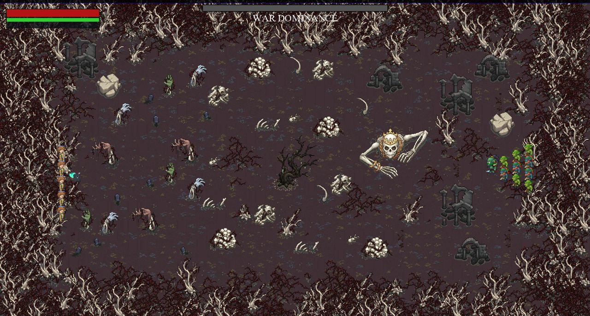
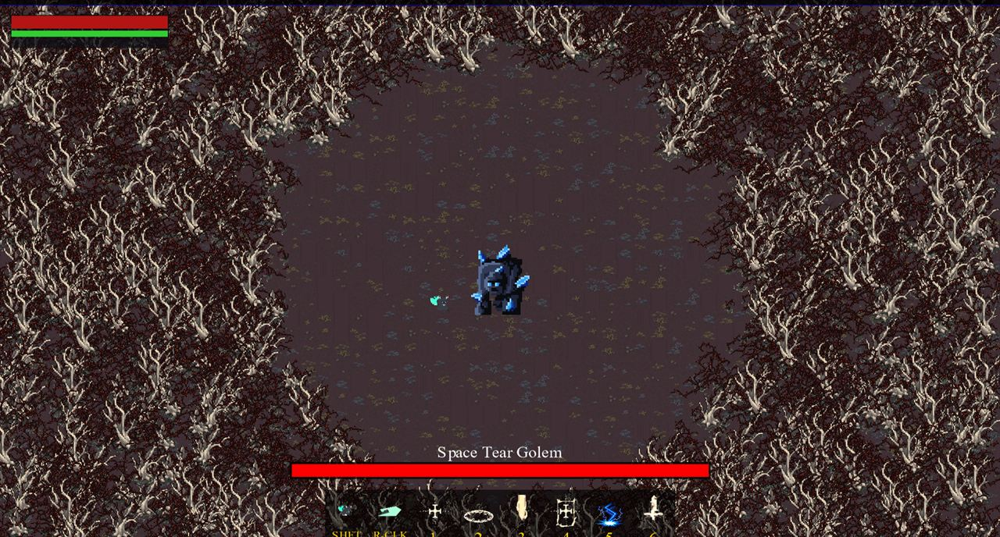
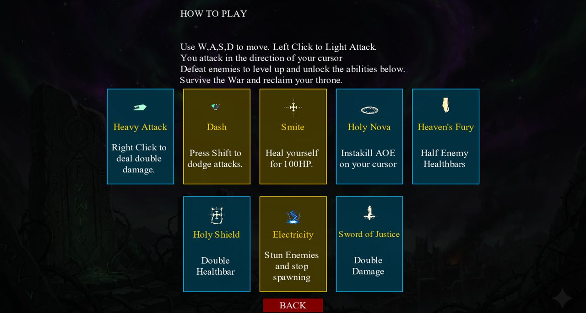
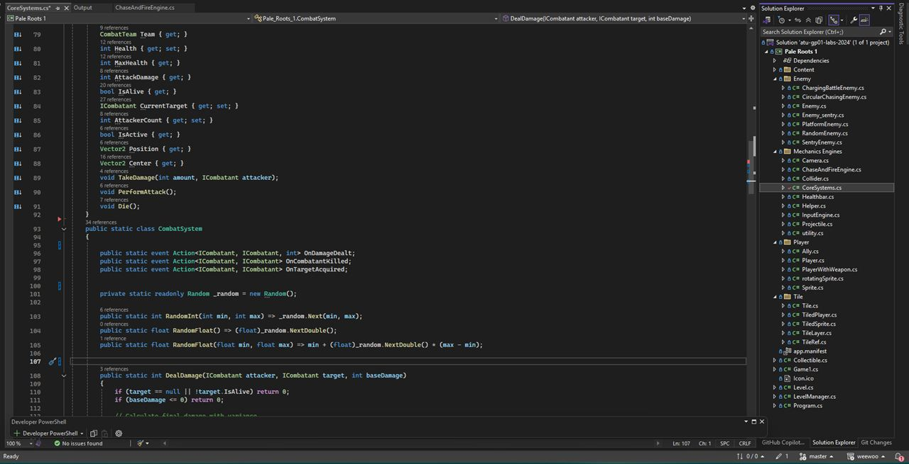

Pale Roots
A sci-fi roguelike on my own MonoGame engine, where the enemies you kill make you stronger. Winner of EA's Best Use of AI Algorithms award at Games Fleadh 2026.
- Role
- Solo developer
- Tech
- C#, MonoGame, custom engine
- When
- Dec 2025 to Mar 2026








-
01 / 04
Award-winning enemy AI
Pale Roots took the EA-sponsored Best Use of AI Algorithms award at Games Fleadh 2026. It runs on an engine I wrote myself in MonoGame: game loop, camera, collision, animation, rendering and state management, with no commercial engine underneath.
-
02 / 04
Armies that spread out instead of swarming
Each unit takes at most 2 attackers, and targets are re-scanned every 500 ms instead of every frame, so armies of 15+ units split into readable duels instead of collapsing into one pile. Behaviour runs on a small state machine (Wander, Chase, Combat, Hurt) behind an
IAIStateinterface. -
03 / 04
A boss that bends gravity
The Black Hole boss pulls the player in on a 6-second cooldown, and answers burst damage with a repel blast once it has taken 200 damage. The fight is its own state pushed onto the game-state stack: its arena, engine and entities are built on entry and thrown away on exit.
-
04 / 04
The engine underneath
Sprites are depth-sorted by their bottom edge, so characters pass in front of and behind scenery. The camera follows, clamps to the map and hands a transform matrix straight to SpriteBatch. Combat raises C# events for damage, kills and new targets, and upgrade cards carry their effect as an
Actiondelegate.